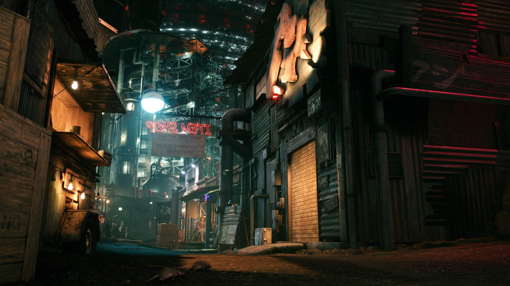
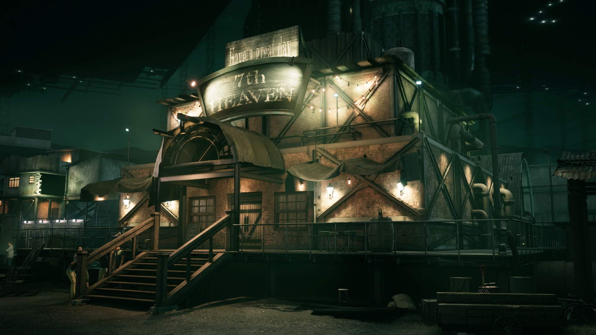

<!-- <!DOCTYPE html>
<html lang="en">

<head>
    <meta charset="UTF-8">
    <meta name="viewport" content="width=device-width, initial-scale=1.0">
    <title>Final Fantasy XII</title>
    <link href="https://fonts.googleapis.com/css2?family=Barlow+Condensed&display=swap" rel="stylesheet">
    <style>
        * {
            margin: 0px;
            padding: 0px;
            font-family: 'Barlow Condensed', sans-serif;
        }

        body {
            background: url("ff7i.jpg") no-repeat;
        }

        h2 {
            display: flex;
            justify-content: center;
            font-weight: bolder;
            color: white;
            padding: 20px;
        }

        nav {
            display: flex;
            justify-content: center;
        }

        nav ul img {
            position: relative;
            width: 4%;
        }

        .items {
            padding: 15px;
            background-color: black;
            list-style: none;
            width: 100%;
            display: flex;
            justify-content: center;
        }

        li a {
            padding: 70px;
            font-size: 123%;
            color: white;
            text-decoration: none;
        }

        .introduction p {
            background-color: #02071b;
            padding: 50px;
            color: white;
            margin: 6%;
            font-size: x-large;
            font-weight: bolder;
            opacity: 0.2;
        }

        .introduction p:hover {
            opacity: 1;
            transition: 1s;
        }

        .introduction h1 {
            color: white;
            display: flex;
            justify-content: center;
            margin-top: 4%;
        }

        .gameplay p {
            background-color: #02071b;
            padding: 50px;
            color: white;
            margin: 10%;
            font-size: x-large;
            font-weight: bolder;
            margin-bottom: -44%;
            opacity: 0.2;
        }

        .gameplay p:hover {
            opacity: 1;
            transition: 1s;
        }

        .gameplay h1 {
            top: -2rem;
            color: white;
            display: flex;
            justify-content: center;
            position: relative;
            margin: -3%;
        }

        .plot p {
            background-color: #02071b;
            padding: 50px;
            color: white;
            margin: 10%;
            font-size: x-large;
            font-weight: bolder;
            margin-top: -137%;
            opacity: 0.2;
        }

        .plot p:hover {
            opacity: 1;
            transition: 1s;
        }

        .plot h1 {
            color: white;
            display: flex;
            justify-content: center;
            position: relative;
            top: 1rem;
        }

        footer h1 {
            padding: 36%;
            color: white;
            text-align: center;
        }

        footer img {
            margin: -21%;
            flex-direction: row-reverse;
            display: flex;
            margin-left: 40%;
            width: 19%;
            opacity: 0.2;
        }

        footer img:hover {
            opacity: 1;
            transition: 1s;
        }
    </style>
</head>

<body>
    <nav>
        <ul class="items">
            
            <li><a href="#">HOME</a></li>
            <li><a href="#">ABOUTUS</a></li>
            <li><a href="#">CONTACTUS</a></li>
            <li><a href="#">MORE</a></li>
        </ul>
    </nav>
    <section class="introduction">
        <h1>- - -BIOGRAPHY- - -</h1>
        <p> Final Fantasy VII Remake is an action role-playing game by Square Enix and released for PlayStation 4 in
            April 2020. An enhanced version, Final Fantasy VII Remake Intergrade, was released for PlayStation 5 and
            Windows in 2021.

            Final Fantasy VII Remake is the first in a planned trilogy of games remaking the 1997 PlayStation game Final
            Fantasy VII. Set in the dystopian cyberpunk metropolis of Midgar, players control the mercenary Cloud
            Strife. He joins AVALANCHE, an eco-terrorist group trying to stop the powerful megacorporation Shinra from
            using the planet's life essence as an energy source. The gameplay combines real-time action with
            role-playing elements.

            Final Fantasy VII Remake was announced in 2015 following years of speculation. Several key staff members
            from the original game returned for the title, including character designer and original story writer
            Tetsuya Nomura as director, director and writer Yoshinori Kitase as producer, writer and event planner
            Kazushige Nojima as story and scenario writer, event planner Motomu Toriyama as a co-director, and composer
            Nobuo Uematsu who returned to write the main theme. The staff redesigned the characters to balance realism
            and stylization.

            Final Fantasy VII Remake received positive reviews, with praise for its graphics, gameplay, narrative, and
            music. Critics praised the expanded story and the updated battle system for its strategic elements and
            visual flourishes, but the linearity and repetitive side-quests received criticism. The game became one of
            the fastest-selling PlayStation 4 games, by selling over 3.5 million units within three days and over 7
            million units by September 2023. The second game in the trilogy, Final Fantasy VII Rebirth, is scheduled for
            2024.</p>
    </section>
    <section class="gameplay">
        <h1>- - -ABOUT GAME- - -</h1>
        <div>
            
        </div>
        <p>Final Fantasy VII Remake is the first in a planned series of games remaking the 1997 PlayStation game Final
            Fantasy VII. It covers the first section of the original game, set in the metropolis Midgar.

            Players control Cloud Strife, a former Shinra soldier turned mercenary who joins the eco-terrorist group
            AVALANCHE to fight the Shinra Corporation, who have been draining the planet's life energy. Every
            element has been remade, using real-time polygonal graphics as opposed to the pre-rendered environments of
            the original. The story includes major expansions to character development and some notable plot
            additions.

            Exploration and battle mechanics both take place in real-time, like Final Fantasy XV. The game features an
            altered Active Time Battle (ATB) system from the original, which gradually fills up slowly, or can fill
            faster with attacks. Once it is filled, the player can halt the action and use special abilities such as
            magic, items, and special moves. The player can assign these special abilities to shortcut buttons, allowing
            them to play in real-time without pausing. Each special ability uses up a segment of the ATB bar. The
            player can switch between party members at any time during battle. Each party member has their own
            individual skills, such as Cloud's close-quarters melee attacks and Barret's long-range distance
            attacks. Players are able to use magic and summons of large creatures, and a Limit Break gauge allows
            characters to perform more powerful attacks once charged. While the game has more real-time elements,
            strategic elements still remain, such as selecting weapons and magic for each character to wield.</p>
    </section>
    <section class="plot">
        <h1>- - -STORYLINE- - -</h1>
        <div>
            
        </div>
        <p>Cloud Strife (Cody Christian/Takahiro Sakurai) is a former member of SOLDIER, the elite warriors of the
            Shinra Electric Power Company. Shinra uses Mako, a refined form of the Planet's spiritual energy
            harvested by massive reactors, to power the metropolis of Midgar and develop cutting-edge
            technology. Disillusioned with Shinra, and at the request of his childhood friend Tifa Lockhart
            (Britt Baron/Ayumi Ito), Cloud takes a mercenary job for Avalanche, an eco-terrorist organization, led
            by Barret Wallace (John Eric Bentley/Masahiro Kobayashi). Barret believes excessive Mako harvesting
            harms the planet, leading a bombing attack on a Mako reactor. In the aftermath, Cloud is haunted by
            memories of Sephiroth (Tyler Hoechlin/Toshiyuki Morikawa), an enigmatic former SOLDIER member, and meets
            the florist Aerith Gainsborough (Briana White/Maaya Sakamoto). Strange ghost-like entities, who
            alternately help and hinder Cloud throughout the game, cause him to be recruited for another attack, in
            which he goes missing in action. Cloud meets Aerith again and protects her from Shinra forces. After
            they reunite with Tifa, the trio learns that Shinra plans to collapse a piece of the "plate" onto the
            Sector 7 slums. Avalanche fails to stop Shinra's plan, and the plate falls. Aerith helps most of the
            population and Barret's daughter Marlene evacuate in time, but is captured by Shinra.

            Cloud, Tifa, and Barret infiltrate Shinra headquarters and rescue Aerith from being used as an
            experiment by Shinra scientist Hojo (James Sie/Shigeru Chiba). She reveals that she is the last
            descendant of the Cetra, a near-extinct precursor race who resided in a "Promised Land", which Shinra
            covets for its boundless Mako reserves. The group meets a talking feline-like creature called Red XIII
            (Max Mittelman/Kappei Yamaguchi), who explains that the ghostly entities are called Whispers. They exist
            to ensure that the course of destiny is not altered, by correcting any deviations from this course.
            Meanwhile, Sephiroth infiltrates Shinra and steals a mysterious entity known as "Jenova", connected to
            the extinction of the Cetra.

            In a confrontation at the top of Shinra headquarters, Sephiroth murders the president of Shinra.
            Shinra's son Rufus (Josh Bowman/Tōru Ōkawa) assumes control of the company and fights Cloud, but is
            defeated. Cloud and his allies flee the scene via the Midgar Expressway, but find Sephiroth waiting for
            them at the end. After defeating Whisper Harbinger, an entity formed by an amalgam of Whispers, Cloud's
            group battles Sephiroth. Sephiroth separates Cloud from the group, asking him to join him and defy fate.
            Cloud refuses and fights Sephiroth, but is defeated, although Sephiroth spares him and departs.
            Meanwhile, as Cloud's group leaves Midgar to stop Sephiroth, SOLDIER Zack Fair (Caleb Pierce/Kenichi
            Suzumura) defeats an army of Shinra forces, and departs with Cloud to Midgar.

            Intergrade adds additional ending scenes showing Cloud and his group arriving at the village of Kalm
            after hitching a ride with Chocobo Bill, and Zack entering the Sector 5 church searching for Aerith.

            Intermission
            Shortly after the bombing of Mako Reactor 5, Yuffie Kisaragi (Suzie Yeung/Yumi Kakazu), a ninja
            working for Wutai, arrives at Midgar and meets up with her partner Sonon Kusakabe (Aleks Le/Yoshimasa
            Hosoya) in order to steal Shinra's "Ultimate Materia". With the help of a local Avalanche cell, Yuffie
            and Sonon infiltrate the lab under Shinra headquarters and fight through Shinra's forces before
            discovering that the Ultimate Materia is not yet complete. As they try to escape, they are confronted by
            a Shinra supersoldier named Nero (Sean Chiplock/Ryōtarō Okiayu). Outmatched, Sonon sacrifices himself to
            ensure Yuffie can escape. She leaves Shinra headquarters just in time to see the Sector 7 plate fall.
            Some time later, Yuffie has left Midgar and muses that in order to achieve her desire to see Shinra's
            downfall, she will need a team to help her.</p>
    </section>

    <footer>
        <div>
        <h1>- - -OUR TEAM - - -</h1>
        
        
        </div>
    </footer>
</body>

</html> -->